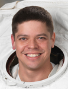

Lyndon B. Johnson Space Center
Houston, Texas 77058
|
National Aeronautics
and Space Administration Lyndon B. Johnson Space Center Houston, Texas 77058 |
 |
Biographical Data |
||
Robert L. Behnken (COLONEL, USAF, Ph.D.)
NASA Astronaut
PERSONAL DATA: Hometown: St. Ann, Missouri. Married. Recreational interests include mountain biking, skiing and backpacking. He has a younger sister, four nephews and two nieces. His father resides in St. Ann, Missouri.
EDUCATION: Pattonville High School, Maryland Heights,
Missouri, 1988
Bachelor of Science in Physics and Bachelor of Science in Mechanical
Engineering, Washington University, 1992
Master of Science in Mechanical Engineering, California Institute of
Technology, 1993
Doctorate in Mechanical Engineering, California Institute of Technology,
1997
SPECIAL HONORS: Outstanding Mechanical Engineering Senior, Washington University (1992); National Science Foundation Graduate Research Fellow (1993 to 1996); United States Air Force medals include Meritorious Service, Defense Meritorious Service and Defense Superior Service; NASA Space Flight Medals (2008, 2010)
EXPERIENCE: Colonel Behnken’s thesis research was in the area of nonlinear control applied to stabilizing rotating stall and surge in axial flow compressors. The research included nonlinear analysis, real-time software implementation development and extensive hardware construction. During his first two years of graduate study, Colonel Behnken developed control algorithms and hardware for flexible robotic manipulators.
Prior to entering graduate school, Colonel Behnken was an Air Force Reserve Officers’ Training Corps (ROTC) student at Washington University in St. Louis and, after graduate school, was assigned to Eglin Air Force Base, Florida. While at Eglin, he worked as a Technical Manager and Developmental Engineer for munitions systems. Colonel Behnken was next assigned to attend the Air Force Test Pilot School at Edwards Air Force Base, California. After graduating, he was assigned to the F-22 Combined Test Force (CTF) at Edwards. In the F-22 test program, he served as the lead Flight Test Engineer for the 4th F-22. Colonel Behnken has more than 1,300 flight hours in more than 25 different types of aircraft.
NASA EXPERIENCE: Selected as a Mission Specialist by NASA in July 2000, Colonel Behnken reported for training in August 2000. Following the completion of 18 months of training and evaluation, he was assigned technical duties in the Astronaut Office Space Shuttle branch, supporting launch and landing activities at Kennedy Space Center, Florida. During the fall of 2008, Colonel Behnken trained as a Mission Specialist for STS-400, the launch-on-need rescue flight for the last Hubble servicing mission. Since then, within the Astronaut Office, he has served in the Exploration branch, as Chief of the Space Station Operations Branch, and as Deputy Chief for Space Station Operations. Currently, Colonel Behnken serves as the Chief of the Astronaut Office.
SPACEFLIGHT EXPERIENCE: Colonel Behnken flew STS-123 in March 2008 and STS-130 in February 2010, logging more than 708 hours in space, including more than 37 hours in six spacewalks.
STS-123 Endeavour (March 11 to March 26, 2008) was a night launch/landing and the 25th International Space Station assembly mission. Endeavour’s crew delivered the first component of the Japan Aerospace Exploration Agency (JAXA) Kibo Laboratory and the final element of the station’s Mobile Servicing System, the Canadian-built Special Purpose Dexterous Manipulator, known as Dextre. Colonel Behnken served as Mission Specialist 1 for ascent and entry, performed three spacewalks, served as the Internal Spacewalk Coordinator (IV) and operated both the station robotic arm and the Dextre robot. The mission was accomplished in 250 orbits of the Earth, traveling 6,577,857 statute miles in 15 days, 18 hours, 10 minutes and 54 seconds.
STS-130 Endeavour (February 8 to February 21, 2010) was a night launch/landing and the 32nd International Space Station assembly mission. Endeavour’s crew delivered and outfitted Node 3, also known as Tranquility, and the Cupola, a seven‑window observation portal for observing the Earth and space. Colonel Behnken served as Mission Specialist 4, operated the space station robotic arm, served as the spacewalking lead and performed three spacewalks. The mission was accomplished in 217 orbits of the Earth, traveling 5,738,991 statute miles in 13 days, 18 hours, 6 minutes and 24 seconds.
AUGUST 2012